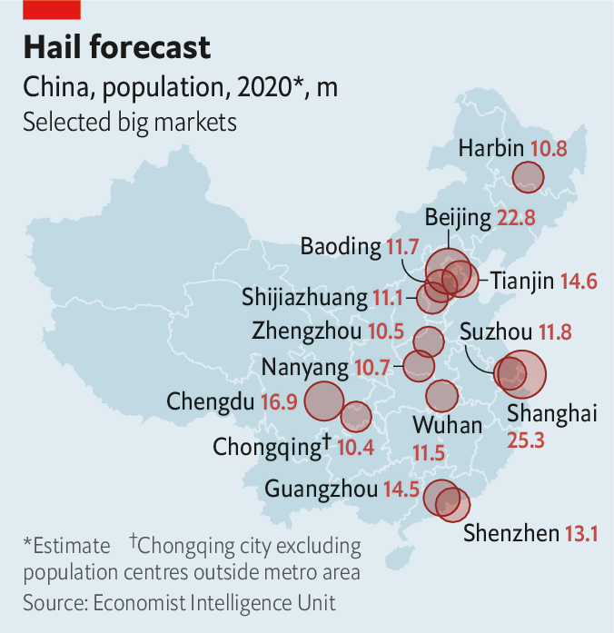
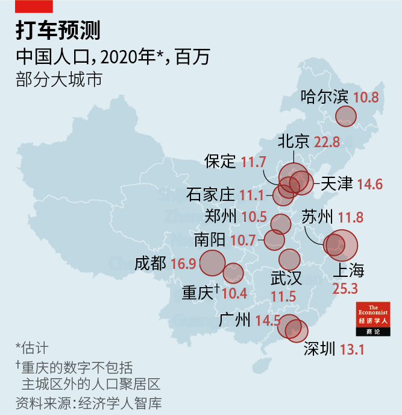
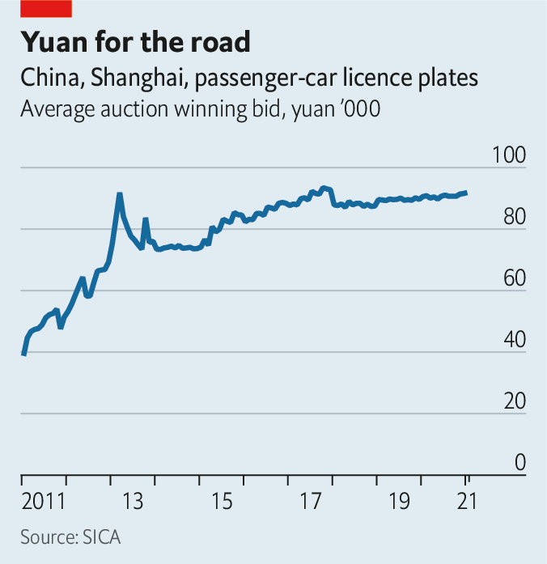
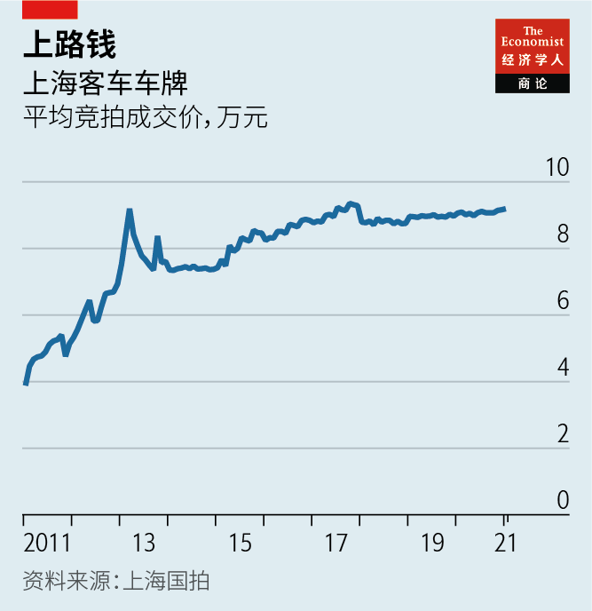

Text
2021-03-01T03:53:35+00:00
Mobility in China
中国的交通出行
中國的交通出行
Trafficking dreams
运输梦想
運輸夢想
To glimpse the future of the ride-hailing business, look east
要一瞥网约车业务的未来，向东看
要一瞥網約車業務的未來，向東看
“WE INVEST A lot of money here in China,” proclaimed Travis Kalanick, founder and then boss of Uber, at a confab in Tianjin in June 2016. But, he added with foreboding, “we have a competitor who is investing even more.” Two months later the American ride-hailing giant threw in the towel, selling its Chinese operations to its Beijing-based rival, Didi. Uber lost some $2bn over two years in China. Its retreat paved the way for Didi to grow into China’s undisputed ride-hailing champion, which today processes over four-fifths of all domestic orders. The Chinese titan is widely expected to go public in the next few months, eight years after its launch. It could fetch a valuation of $60bn.
“我们在中国投了很多钱。”2016年6月，优步的创始人、时任老板特拉维斯·卡兰尼克（Travis Kalanick）在天津一次非正式会面中宣称。但他语带不安地补充道：“我们有个竞争对手投的更多。”两个月后，这家美国网约车巨头认输，把它的中国业务出售给了总部在北京的竞争对手滴滴。优步在中国的两年里亏损了约20亿美元。它的撤退为滴滴的壮大铺平了道路，后者在中国成为无可争议的网约车霸主，如今处理的出行订单占国内总量的五分之四以上。人们普遍预计，问世八年后，这家中国巨头将在未来几个月内上市。它的估值可能达到600亿美元。
“我們在中國投了很多錢。”2016年6月，優步的創始人、時任老闆特拉維斯·卡蘭尼克（Travis Kalanick）在天津一次非正式會面中宣稱。但他語帶不安地補充道：“我們有個競爭對手投的更多。”兩個月後，這家美國網約車巨頭認輸，把它的中國業務出售給了總部在北京的競爭對手滴滴。優步在中國的兩年里虧損了約20億美元。它的撤退為滴滴的壯大鋪平了道路，後者在中國成為無可爭議的網約車霸主，如今處理的出行訂單佔國內總量的五分之四以上。人們普遍預計，問世八年後，這家中國巨頭將在未來幾個月內上市。它的估值可能達到600億美元。
That Uber was willing to burn through so much cash, at least for a time, is a testament to the size of the prize. China boasts the world’s biggest ride-hailing market. According to its transport ministry, 21m trips were booked on ride-hailing platforms each day, on average, last October. That is double the figure in pre-pandemic America, when travel was safer. Until it sold its Chinese business, Uber received more orders in China than in any other country, including its home market. The gross transaction value of China’s ride-hailers reached 221bn yuan ($32bn) last year, up by more than half since 2017, reckons Frost and Sullivan, a consultancy.
优步愿意烧这么多钱（至少一度如此），足以证明成功的回报巨大。中国拥有世界上最大的网约车市场。据中国交通运输部的数据，去年10月，网约车平台的日均订单量为2100万单。这是美国在新冠疫情前出行较安全时的数字的两倍。在出售中国业务前，优步在中国的订单量比在其他任何国家的都多，包括在它的本土市场。咨询公司弗若斯特沙利文（Frost & Sullivan）估计，去年中国网约车市场交易总额达到2210亿元，自2017年以来增长超过50%。
優步願意燒這麼多錢（至少一度如此），足以證明成功的回報巨大。中國擁有世界上最大的網約車市場。據中國交通運輸部的數據，去年10月，網約車平台的日均訂單量為2100萬單。這是美國在新冠疫情前出行較安全時的數字的兩倍。在出售中國業務前，優步在中國的訂單量比在其他任何國家的都多，包括在它的本土市場。諮詢公司弗若斯特沙利文（Frost & Sullivan）估計，去年中國網約車市場交易總額達到2210億元，自2017年以來增長超過50%。
America may have invented ride-hailing. But it is in China where the conditions are most fertile for it to flourish. The reasons go deeper than the size of the market. Didi has the most to gain. But its dominance will increasingly be contested.
美国也许创造了网约车行业，但中国为它的繁荣发展提供了最肥沃的土壤。这背后的原因不仅仅在于市场规模。滴滴从中获益最多，但它的霸主地位将面临越来越多的挑战。
美國也許創造了網約車行業，但中國為它的繁榮發展提供了最肥沃的土壤。這背後的原因不僅僅在於市場規模。滴滴從中獲益最多，但它的霸主地位將面臨越來越多的挑戰。
Ride-hailing firms depend disproportionately on customers in big cities, where population density is highest. Around a quarter of Uber’s gross bookings by value in 2019 came from just five metropolises: Chicago, Los Angeles, New York, San Francisco and London. China has 14 metropolitan areas with a population of over 10m (see map), more than any other country.
网约车公司特别依赖人口密度最高的大城市里的客户。2019年优步订单总额的约四分之一来自五个大都市：芝加哥、洛杉矶、纽约、旧金山和伦敦。中国拥有14个人口超过1000万的大城市（见地图），比其他任何国家都多。
網約車公司特別依賴人口密度最高的大城市裡的客戶。2019年優步訂單總額的約四分之一來自五個大都市：芝加哥、洛杉磯、紐約、舊金山和倫敦。中國擁有14個人口超過1000萬的大城市（見地圖），比其他任何國家都多。
Most of these cities, keen to reduce rage-inducing congestion, discourage private car ownership by restricting the supply of licence plates. In Beijing’s most recent bi-monthly lottery 3.6m applicants competed for 6,370 number plates. Shanghai, China’s most populous city, puts a small number of plates up for auction each month. The average winning bid at the auction in January was 91,863 yuan, more than double what it was a decade ago and costlier than many mid-range cars (see chart). The southern boomtowns of Guangzhou and Shenzhen have hybrid models whereby some plates are allocated via lottery and the rest sold to bidders. All that leaves millions of disappointed wannabe motorists for ride-hailing firms to cater to.
这些城市大多急于缓解让人光火的交通拥堵问题，通过限制发放车牌来控制私家车数量。北京每两个月摇号一次，最近一次有360万申请人竞争6370个车牌。中国人口最多的城市上海每个月都会拿出少量车牌来拍卖。在1月的竞拍中，平均成交价为91,863元，比十年前高出一倍多，比许多中档车还贵（见图表）。新兴的南方城市广州和深圳则采取混合模式，即一部分车牌通过摇号分配，其余通过竞拍供应。这一切让数以百万计想买车的人望牌兴叹，他们成为了网约车公司的服务目标。
這些城市大多急於緩解讓人光火的交通擁堵問題，通過限制發放車牌來控制私家車數量。北京每兩個月搖號一次，最近一次有360萬申請人競爭6370個車牌。中國人口最多的城市上海每個月都會拿出少量車牌來拍賣。在1月的競拍中，平均成交價為91,863元，比十年前高出一倍多，比許多中檔車還貴（見圖表）。新興的南方城市廣州和深圳則採取混合模式，即一部分車牌通過搖號分配，其餘通過競拍供應。這一切讓數以百萬計想買車的人望牌興嘆，他們成為了網約車公司的服務目標。
Moreover, high urban density and the absence of American-style suburban sprawl turn parking space into a prized (and pricey) commodity. The number of public parking spaces per car in Beijing, China’s second-most populous city, is a fifth of that in its American opposite number, Los Angeles. China’s extensive high-speed rail network, the world’s longest, blunts the benefits of car ownership for long-distance travel. And cheaper labour means rides can be offered at low prices, making them accessible to a wider group of customers. More than 340m Chinese booked a ride-hailing service at least once in the first half of 2020, notes the Ministry of Industry and Information Technology.
此外，中国城市人口密度高，又不像美国那样有大面积的城郊居住区，停车位成了宝贵（且昂贵）的商品。在中国人口第二多的城市北京，平均每辆车的公共停车位数量是美国人口第二多的城市洛杉矶的五分之一。中国的高速铁路网覆盖广阔，里程世界第一，这削减了拥有私家车对于长途旅行的好处。这里的劳动力更廉价，使得网约车服务的价格便宜，让更广泛的客户群体都能负担得起。工业和信息化部指出，2020年上半年，超过3.4亿中国人至少预订了一次网约车服务。
此外，中國城市人口密度高，又不像美國那樣有大面積的城郊居住區，停車位成了寶貴（且昂貴）的商品。在中國人口第二多的城市北京，平均每輛車的公共停車位數量是美國人口第二多的城市洛杉磯的五分之一。中國的高速鐵路網覆蓋廣闊，里程世界第一，這削減了擁有私家車對於長途旅行的好處。這裡的勞動力更廉價，使得網約車服務的價格便宜，讓更廣泛的客戶群體都能負擔得起。工業和信息化部指出，2020年上半年，超過3.4億中國人至少預訂了一次網約車服務。
In 2019 Didi disclosed that it was losing an average of just 2% of the total fare on each ride. The company now says its “core ride-hailing business in China is already profitable”. It is coy about the details; Uber also insists it makes money from ride-hailing but continues to report vast operating losses, of $4.9bn last year. Yet most analysts in China take Didi at its word. The question for Didi, they say, is not whether it can break even but rather how well it can sustain profits, maintain its near-monopoly in China and expand abroad.
滴滴在2019年披露，平均每笔订单仅亏损车费的2%。该公司现在表示“在中国的核心网约车业务已实现盈利”，但不愿透露细节。优步也坚称自己的网约车业务是盈利的，但继续报告巨额运营亏损，去年亏了49亿美元。不过，中国的分析师大多相信滴滴的说法。他们说，滴滴的问题不在于能否实现收支平衡，而在于能否很好地维持利润、保持它在中国近乎垄断的地位，并向海外扩张。
滴滴在2019年披露，平均每筆訂單僅虧損車費的2%。該公司現在表示“在中國的核心網約車業務已實現盈利”，但不願透露細節。優步也堅稱自己的網約車業務是盈利的，但繼續報告巨額運營虧損，去年虧了49億美元。不過，中國的分析師大多相信滴滴的說法。他們說，滴滴的問題不在於能否實現收支平衡，而在於能否很好地維持利潤、保持它在中國近乎壟斷的地位，並向海外擴張。
In recent years the firm has expanded into new business lines, from bike-sharing and food delivery to financial services. The aim is to build up a convenient “ecosystem” to make it costlier for customers to switch to a rival platform. Those rival platforms are not standing still, however. Jack Wei, boss of Shouqi Yueche, Didi’s closest domestic competitor, is sanguine about the challengers’ prospects. He sees room for “multiple firms”, perhaps three or four, to thrive in China in the long term.
近年，滴滴已经向新业务进发，包括共享单车、外卖以至金融服务，目的是建立一个便捷的“生态系统”，提高客户转向对手平台的成本。但这些对手平台也不是原地踏步。首汽约车是滴滴的第一大国内竞争者，CEO魏东对挑战者这一方的前景态度乐观。他认为，长远来看，中国有足够的空间让“几家公司”——大概三四家——蓬勃发展。
近年，滴滴已經向新業務進發，包括共享單車、外賣以至金融服務，目的是建立一個便捷的“生態系統”，提高客戶轉向對手平台的成本。但這些對手平台也不是原地踏步。首汽約車是滴滴的第一大國內競爭者，CEO魏東對挑戰者這一方的前景態度樂觀。他認為，長遠來看，中國有足夠的空間讓“幾家公司”——大概三四家——蓬勃發展。
One way to carve out a bigger slice of the market is through differentiation, Mr Wei suggests. Shouqi prides itself on premium customer service (as Lyft, Uber’s domestic rival, tries to). Its ambition is to become the “leader” in upscale rides while “keeping up” with Didi in the mass market. China is large enough that serving this niche is big business. Shouqi expects to turn a net profit this year on revenues of 8bn yuan.
魏东提出，想在这个市场上分得更大的一杯羹，一个方法是差异化。首汽约车以高端客户服务为荣（像优步在美国的竞争对手Lyft力图做到的那样）。其抱负是成为高端网约车的“领头羊”，同时在大众市场“跟上”滴滴的步伐。中国那么大，能做好这个利基市场也是笔大生意。首汽约车预计今年将在获得80亿元收入的同时实现净盈利。
魏東提出，想在這個市場上分得更大的一杯羹，一個方法是差異化。首汽約車以高端客戶服務為榮（像優步在美國的競爭對手Lyft力圖做到的那樣）。其抱負是成為高端網約車的“領頭羊”，同時在大眾市場“跟上”滴滴的步伐。中國那麼大，能做好這個利基市場也是筆大生意。首汽約車預計今年將在獲得80億元收入的同時實現凈盈利。
Another path is to forge strategic alliances. Shouqi has one with Meituan, a rising Chinese e-commerce star that offers, among other things, food-delivery and bike-sharing services. The agreement allows Meituan’s 477m annual active users to book Shouqi rides directly in its super-app. In return Shouqi pays Meituan a small commission on each booking. Crucially, Meituan excludes Didi, which it views as a threat, from its platform.
另一个办法是打造战略联盟。首汽约车已与提供外卖和共享单车等服务的中国电商新贵美团达成了这样的合作关系。美团的4.77亿名年活跃用户可以在其超级应用中直接预订首汽约车。作为回报，首汽约车就每笔订单向美团支付少量佣金。这里的一个关键是，美团视滴滴为威胁，把它排除在自家平台之外。
另一個辦法是打造戰略聯盟。首汽約車已與提供外賣和共享單車等服務的中國電商新貴美團達成了這樣的合作關係。美團的4.77億名年活躍用戶可以在其超級應用中直接預訂首汽約車。作為回報，首汽約車就每筆訂單向美團支付少量傭金。這裡的一個關鍵是，美團視滴滴為威脅，把它排除在自家平台之外。
Despite its advantages, the Chinese market presents some obstacles. As in the West, the authorities are concerned about big tech. In December the markets regulator summoned six online giants, including Didi, and lectured them on how not to abuse their dominant positions. At the local level, more than a hundred municipalities have drafted stricter rules on who can drive for ride-hailing firms over the past four years. The aim appears to be to appease embattled local taxi industries. The rules typically set a high bar, such as requiring existing residency status in the city where a driver wants to work. Yet most drivers are migrant workers who lack the proper papers. In 2016 Didi complained that only 3% of its 410,000 drivers in Shanghai would have passed the test.
中国市场尽管有其优势，但也存在一些障碍。和西方一样，政府也对科技巨头心存忧虑。去年12月，市场监管机构约谈了包括滴滴在内的六家网络巨头，告诫它们不得滥用市场支配地位。在地方层面，过去四年，一百多个城市就网约车司机的从业资格起草了更严格的规定。这似乎是为了安抚陷入困境的地方出租车行业。这些规定通常都设置了很高的门槛，比如要求网约车司机必须有本地户籍，而大多数司机都是没有本地户口的外来打工族。2016年，滴滴抱怨称，它在上海的41万名司机中只有3%可能通过审核。
中國市場儘管有其優勢，但也存在一些障礙。和西方一樣，政府也對科技巨頭心存憂慮。去年12月，市場監管機構約談了包括滴滴在內的六家網絡巨頭，告誡它們不得濫用市場支配地位。在地方層面，過去四年，一百多個城市就網約車司機的從業資格起草了更嚴格的規定。這似乎是為了安撫陷入困境的地方出租車行業。這些規定通常都設置了很高的門檻，比如要求網約車司機必須有本地戶籍，而大多數司機都是沒有本地戶口的外來打工族。2016年，滴滴抱怨稱，它在上海的41萬名司機中只有3%可能通過審核。
The arrival of self-driving cars, which Didi has been developing since 2016, may one day solve this problem, though probably not imminently (last year Uber called it quits and spun off its autonomous-vehicle arm). In the meantime, Didi is hedging its bets by diversifying. In 2017 it set up an international division. A chunk of the $4.5bn it raised a year later was earmarked for foreign expansion. Today it operates in 13 overseas markets, mainly in Latin America. Three years ago it acquired a controlling stake in 99 Taxi, which competes with Uber in Brazil, in a deal that valued the Brazilian startup at around $1bn.
自2016年以来滴滴一直在开发的无人驾驶技术有朝一日也许能解决上述问题，但这一天大概不会很快到来（去年优步剥离了无人驾驶部门，宣告退出该市场）。与此同时，滴滴正通过多元化来对冲风险。它在2017年成立了国际化事业部，一年后融资的45亿美元中很大一块被划拨用于海外扩张。如今，它在13个海外市场开展业务，主要在拉丁美洲。三年前，它收购了优步在巴西的竞争对手99 Taxi的控股权，这项交易对这家巴西创业公司的估值约为10亿美元。
自2016年以來滴滴一直在開發的無人駕駛技術有朝一日也許能解決上述問題，但這一天大概不會很快到來（去年優步剝離了無人駕駛部門，宣告退出該市場）。與此同時，滴滴正通過多元化來對衝風險。它在2017年成立了國際化事業部，一年後融資的45億美元中很大一塊被劃撥用于海外擴張。如今，它在13個海外市場開展業務，主要在拉丁美洲。三年前，它收購了優步在巴西的競爭對手99 Taxi的控股權，這項交易對這家巴西創業公司的估值約為10億美元。
But China remains the biggest opportunity, which explains why Shouqi has chosen to lock in on its home market for the time being. It helps that local authorities have, for the most part, turned a blind eye to rule-bending by the ride-hailing firms. Perhaps they calculate that unemployment resulting from tougher enforcement imperils social stability, not least as economic growth slows and good manufacturing jobs are harder to come by. One in eight drivers for Didi in China are military veterans, a group known for staging small-scale protests when their interests are harmed. Given Beijing’s harmony-obsessed leaders, it is a good bet that ride-hailing in China has plenty of road left to run. ■
但最大的机会仍在中国，这也是为什么首汽选择暂时专注发展本土市场。地方政府在大多数情况下都对网约车公司违规经营睁一只眼闭一只眼，这是个有利因素。也许政府估计收紧执法会导致失业，危及社会稳定，尤其是在经济增长放缓、制造业好职位减少的情况下。在中国，每八个滴滴司机中就有一人是退伍军人，这一群体以常常在利益受损时发起小型抗议闻名。考虑到中国领导人极度重视维稳，押注中国的网约车市场前途广阔还是非常稳妥的。
但最大的機會仍在中國，這也是為什麼首汽選擇暫時專註發展本土市場。地方政府在大多數情況下都對網約車公司違規經營睜一隻眼閉一隻眼，這是個有利因素。也許政府估計收緊執法會導致失業，危及社會穩定，尤其是在經濟增長放緩、製造業好職位減少的情況下。在中國，每八個滴滴司機中就有一人是退伍軍人，這一群體以常常在利益受損時發起小型抗議聞名。考慮到中國領導人極度重視維穩，押注中國的網約車市場前途廣闊還是非常穩妥的。